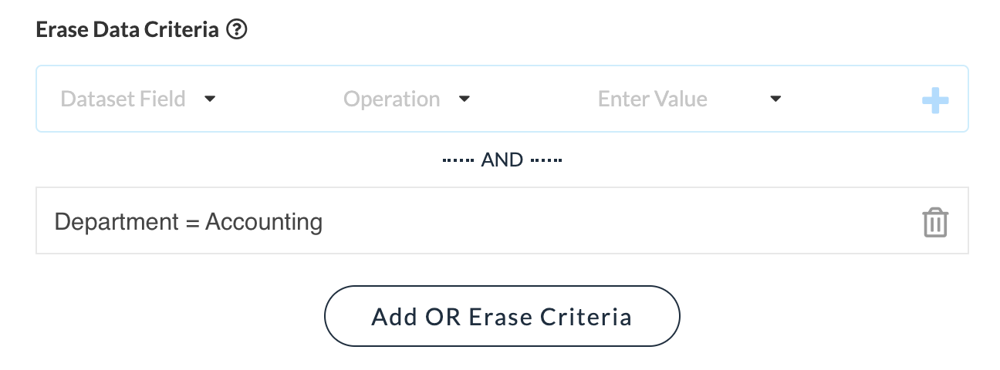

Outputs
In the Outputs section of Job configuration, the specific data-targets a flow will write to are selected and their fields mapped to the fields emitted by the flow. Take note of the following options and attributes.
- Open Flow button - this allows quick access to the job's Flow.
- Refresh Columns button - if the connected data source or flow has changed since last edit, use this button to refresh the list of fields that must be mapped.
- Change Source button - click this to select a different data-target.
- Column Mapping - Each field in the selected data source (Data Column) must be mapped to a data field specified by the flow (Flow Output).
Erasing and Replacing Data
Just below the data mapping section is a check box labeled Erase data before running. When this option is checked, the data currently contained in the data target will be erased prior to the Job being run. This effectively replaces the data that was there with the new data written by the job.
Some sources of connected Data support a more complex way to replace records. If supported by the selected data target, an Add Erase Criteria button will appear. You can then set conditions describing which records should be erased prior to running the job. Use this when multiple jobs write data to the same target. You can then add criteria that are specific to rows emitted by that job, such that only records in the target data that match are effectively replaced.
In the example above, imagine each department has its own job that writes a departmental analysis to a single results table. The records emitted by these models are tagged with the departments name. Now when running, each department can replace only their own rows in the data target.
See also: Configure a Job, Run a Job